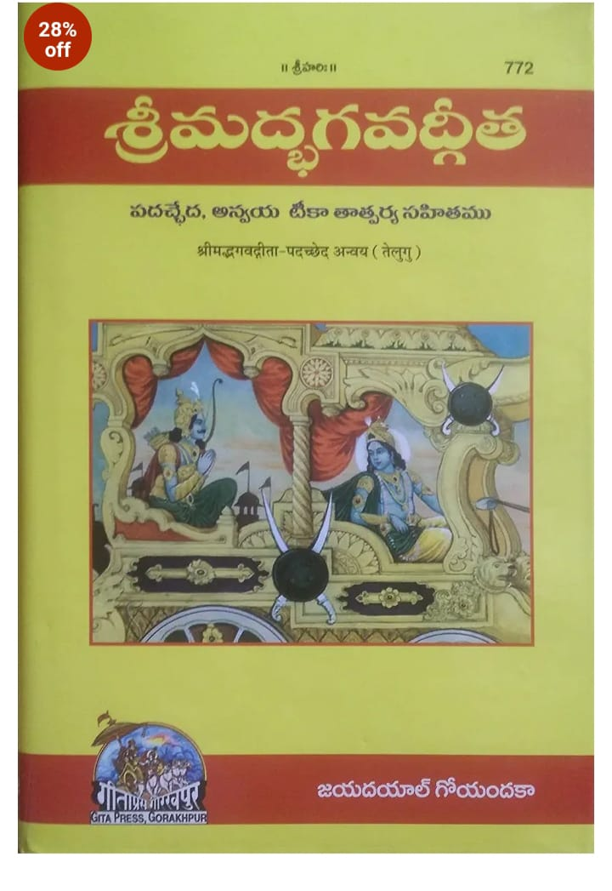
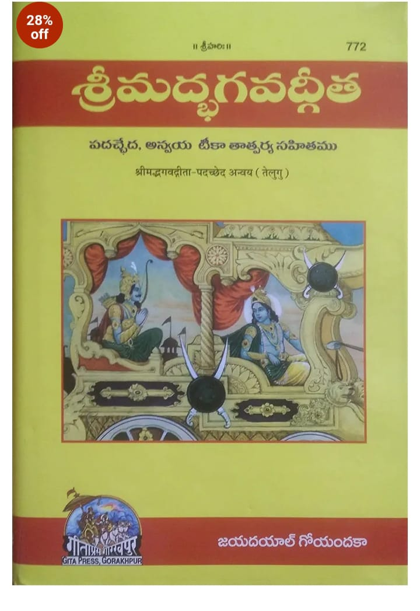

This temple is on Krounchadri hill which is in Vaikuntapuram village on the way to Amaravati. Have climbed it a couple of times in the past. There were no proper steps. most of them were broken yet they were the old time temple steps where u do not feel like climbing since they are in slope format and most distance is covered by the time the step concludes. I parked my car in the parking place. There were lot many cars there surprisingly. I have never seen so many cars in Vaikuntapuram before. It was the last Sunday of the month of Karthik. So those who haven't gone anywhere else till date seem to have come this far today. We started for this place after breakfast around 10 am. It was a pleasant atmosphere. We moved onto the barrage and took a right turn to Krishna Karakatta road. There is a proposal to make it a 4 lane road soon. That will increase traffic to this area. We went on the road till Venkatapalem. The kids enjoyed the fields on either side & banana plantations. We crossed Manthena satyanarayana raju ashram and took a left at venkatapalem and entered the seed access road. After the 3rd road,we had to take a soil road to shift to next road. All roads are still not interconnected to Amaravati. Soon, we were on the road to Amaravati and entered the Vaikuntapuram Arch. The temple of Venkateswara Swamy is claimed by priests to be from Dwapara Yuga. So in all calculations, it should be around 5000 yrs old. The outside mandapam is around 1000 yrs old or so. The Krishna river is on the north making the place Uttarvahini. Like in Kasi, this place too has 5 sivalingas on same rock. The long standing demand of a ghat road seems to have been fulfilled as we could see cars coming up. Not knowing that, we climbed up 450 steps. Some devotees have done puja to the steps making them pooja stairs meaning u cannot climb up using ur slippers. In summer sun, it would be very hard in daytime. The best approach is to ride up in car/bike. The temple has lot of land but development is little. The temple is close to the proposed capital in Tullur. Vaikuntapuram Venkateswara Swamy Temple Many believe in the miraculous power of the lord and regularly come up every year.
Monday-- 6:30am-1:00pm
Tuesday--6:30 am–1:00 pm
Wednesday--6:30 am–1:00 pm
Thursday--6:30 am–1:00 pm
Friday--6:30 am–1:00 pm
Saturday-- 6:30 am–2:00 pm
Sunday--6:30 am-2:00 pm
-->There is no accommodation available in the village 'no hotels', we can stay in nearest town "Amaravathi"


 

We can reach VykuntaPuramam by Road
We can get Govt. buses from Guntur, Vijayawada to Amaravati, from there you need to hire local transportation to VykuntaPuramam